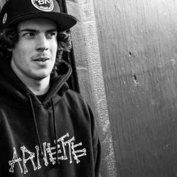
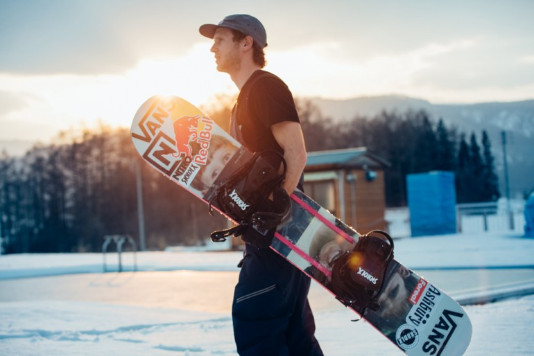
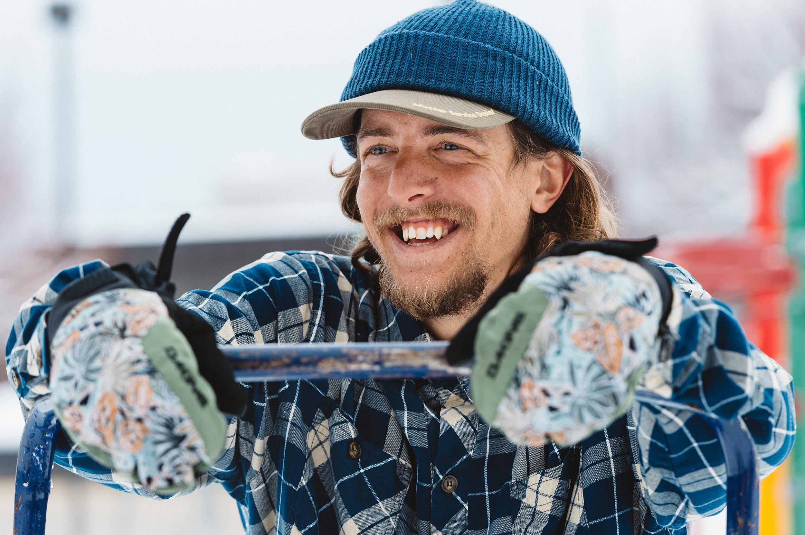

O Real Snow, o concurso de vídeo de snowboarding da X Games, acaba de encerrar mais um ano. O voto favorito dos fãs foi uma batalha de uma rodada, vencedor leva tudo para o final. Os fãs assistiram aos vídeos abaixo e votaram em suas escolhas para ganhar. Quando a poeira baixou, o medalhista de ouro da Snow, Frank Bourgeois, saiu vitorioso. Os vencedores das medalhas de ouro, prata e bronze dos X Games, premiados pelo juiz, foram anunciados durante a transmissão do "Mundo dos X Games: Neve Real" na ABC, sábado, 24 de março. Assista aos segmentos de bastidores dos medalhistas dos X Games. do show da ABC abaixo: OURO, FAV FAVORITO: Frank Bourgeois e William e Charles Demers PRATA: Benny Urban e Alexander Pfeffer BRONZE: Ozzy Henning e Cole Taylor
Frank Bourgeois
Idade: 27 | Regular | Cidade natal: Trois-Rivières, Quebec | Parte de vídeo mais recente: "Origins" do TransWorld Snowboarding | Neve Real 2016, 2017 Fã-Favorita, 2016 medalhista de prata, 2017 medalha de ouro | Filmers: William e Charles Demers
Benny Urban
Idade: 26 | Pateta | Cidade natal: Munique, Alemanha / Salt Lake City, Utah | Parte de vídeo mais recente: Videograss '"Visitors" | Real rookie da neve | Filmer: Alexander Pfeffer
Ozzy Henning
Idade: 28 | Regular | Cidade natal: Heber City, Utah | Parte mais recente do vídeo: Ender, "Pepper" da Snowboarder Magazine | Vencedor, Melhor Truque, Dew Tour 2017 StreetStyle | Filmer: Cole Taylor